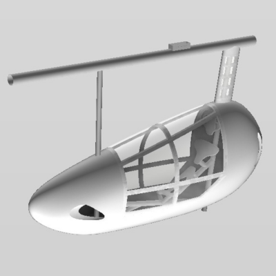
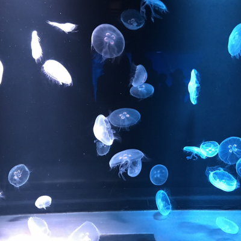

写真
以下、10秒に1回、41枚の写真から11枚選ばれて切り替わります。







名前: 増田 凱斗 (ますだ かいと)
所属:
京都大学大学院農学研究科
参加団体:
京都大学宇宙総合学研究ユニット
研究内容:
人工光型植物工場におけるLEDの照射方法とリーフレタスの応答
趣味: 料理 / 旅行 / ドライブ / サイクリング
興味:
データサイエンティストやIT企画・ストラテジストに興味があります。
Python / R / HTML / CSS扱えます。TypescriptとSQL勉強中です。
以下、10秒に1回、41枚の写真から11枚選ばれて切り替わります。
2016.04-2018.07: 京都大学鳥人間チームShootingStars | フェアリング班班長兼設計
3DCADのFusion360を扱う経験をしました。
2020.09-now: 深層学習・機械学習勉強会 | 企画
Python3系でのTensorFlow・kerasを用いた深層学習勉強会を週一で行っています。ゴミ箱AIを作成中。
2016.05-now: トライプラス宝ヶ池駅前校 |
塾講師
小学生から浪人生まで幅広く見てきました。
2016.05-now: 京都大学宇宙総合学研究ユニット
| OA
webページの更新、宇宙木材利用研究会の参加、長期真空木材実験の参加(Pythonを用いたプログラム作成)、有人宇宙学実習での模擬微小重力実験支援、パラボリックフライト実験の搭乗、と幅広く活動しています。
2018.11-2019.03: HILLTOP株式会社 | モデラー
鳥人間で培った製図能力を活かして、GO2camやSOLIDWORKSを用いた2Dから3Dへの図面引き起こしや切削プログラム作成の経験をしました。
2019.12: ロボット教室 | 運営支援
小学生を対象としたArduinoと3Dプリンタを用いたロボット製作全般を担当しました。
-2015.03: 千葉県立千葉高等学校普通科卒業
-2016.03: 浪人
-2020.03: 京都大学農学部地域環境工学科卒業
2020.04-: 現職
masuda.kaito.27m [] st.kyoto-u.ac.jp
[] をアットマークに変えてください。